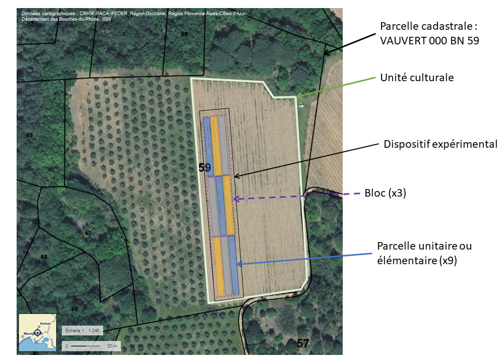
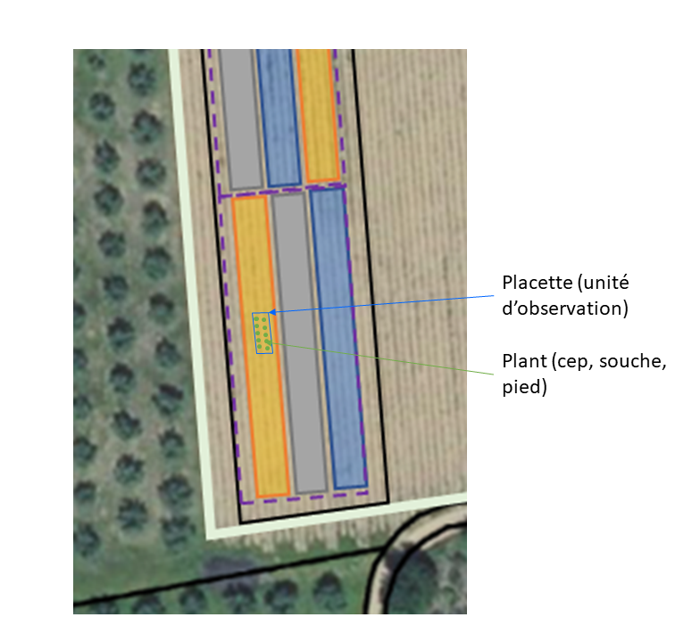

| Label | Description | Exemple |
|---|---|---|
| Code de la parcelle unitaire | Code de la parcelle unitaire (ou élémentaire) permettant son identification unique au sein de l'expérimentation | M11 |
| Nombre de ceps | Nombre de ceps dans la parcelle unitaire | 30 |
| Position x | Position de la parcelle unitaire en coordonnées relatives x. Typiquement, cela peut être un numéro de rang. | 5 |
| Position y | Position de la parcelle unitaire en coordonnées relatives y. Typiquement, cela peut être le numéro de la 1er souche de la placette à partir du début du rang. | 25 |
| Bloc | Code du bloc surlequel se trouve la parcelle unitaire | A |
| Traitement | Code du traitement appliqué sur la parcelle unitaire | TEM |
3 Le dispositif expérimental
3.1 Le vocabulaire
Au vignoble , l’expérimentation est généralement mis en place sur une parcelle ou unité culturale. Le dispositif expérimental est mis en place sur tout ou partie de la parcelle (Figure 3.1), avec laquelle il partage un certain nombre de caractéristiques en dehors des traitements appliqués dans le cadre de l’expérimentation.
On appelle “traitement expérimental” toute combinaison de niveaux ou de modalités des facteurs étudiés. Si un seul facteur est étudié, il y a identité entre un traitement et un niveau.
La “parcelle unitaire” (ou élémentaire) est la plus petite unité expérimentale qui reçoit un traitement. Dans les essais au champ, elle est constituée d’une certaine étendue de terrain et d’un certain nombre de plants. L’ensemble des parcelles unitaires définit le “dispositif expérimental”.
L’unité d’observation peut-être restreinte à une sous-partie de la parcelle unitaire (Figure 3.1 (b)). En vigne, le terme de “placette” est souvent utilisé pour l’unité d’observation. Enfin, chaque placette est constituée d’un ensemble de plants de vigne, aussi appelés pieds, souches ou ceps.


3.2 Le plan d’expérience
Les facteurs étudiés et leurs niveaux (ou modalités) sont décrits indépendamment du plan d’expérience (Table 3.1). Une attention particulière doit être accordée à la description des facteurs.
Parmi les traitements, attention au terme générique “témoin” , dont la nature peut varier suivant les objectifs de l’expérience. Suivant les cas, il peut s’agir d’un témoin avec les pratiques du viticulteur, un témoin sans apport, et dans les essais de protection phytosanitaire on parle de témoin de vraisemblance ou de témoin non traité (ou TNT). Il est donc nécessaire de décrire précisément le traitement “Témoin” pour éviter toute mauvaise interprétation des résultats.
| Label | Description | Exemple | Liste |
|---|---|---|---|
| Description du facteur étudié | Description du facteur (texte libre) | Apport de matière organique sous forme d'amendement, réalisé en 2009,2012 et 2019 | |
| Catégorie de facteur | Type du facteur étudié | Intrant | matériel végétal intrant traitement phytosanitaire entretien du sol mode de conduite système |
| Niveau de facteur | Nom ou code du niveau (valeur) du facteur | DV | |
| Description du niveau de facteur | Description du niveau de facteur | Apport de compost de déchets verts à 30T/ha en 2009,2012 et 2017 |
Le dispositif en lui-même peut être décrit par quelques métadonnées (Table 3.2).
| Label | Description | Exemple | Liste |
|---|---|---|---|
| Description du plan d'expérience | Brève description du plan d'expérience. Dans certains cas, il n’y a pas de plan d’expérience, et s’il s’agit d’une compilation de différentes études, on peut préciser « données aggrégées ou réduites » | Dispositif en carré latin à 3 répétitions. 10 ceps sont suivis sur chaque unité expérimentale de 3 inter-rangs de large | |
| Type de plan d'expérience | Type de plan d'expérience selon la crop ontology CO_715 | Carré latin | Randomisé Carré latin Bloc randomisé Blocs incomplets |
| Traitement | Code ou acronyme du traitement appliqué | MO | |
| Combinaison de niveaux de facteurs | Liste des niveaux de facteurs du traitement | MO [ici un seul facteur] | |
| Nombre de répétition | Nombre de répétitions du traitement | 3 | |
| Taille des unités expérimentales | Taille en m² des unités expérimentales | 215 | |
| Description des unités d'observations | Brève description des unités d'observations | placette de 10 ceps située au centre de chaque unité expérimentale | |
| Hétérogénéité | Descriptif des facteurs d'hétérogénéité éventuels du dispositif expérimental (sol, matériel végétal, topographie…) | gradient NS de fertilité du sol |
Chaque parcelle unitaire (ou élémentaire) peut être définie par quelques champs de métadonnées proposés dans le Table 3.3 ci-dessous. Les coordonnées relatives des parcelles unitaires peuvent être précisées mais dépendent du point de référence choisi par l’expérimentateur, souvent pour des considérations pratiques (accès de la parcelle). Les renseigner permet toutefois de générer le plan d’expérience et de tenir compte de leur position relative dans l’espace pour une représentation spatiale des données.
Le jeu de données lui-même devra être complété par un dictionnaire de données, explicitant les variables mesurées. Ces variables doivent être à chaque fois que c’est possible reliées à la Vitis Ontology(Duchêne et Pommier 2019).